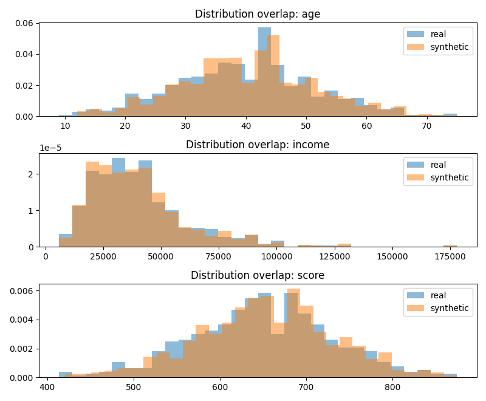
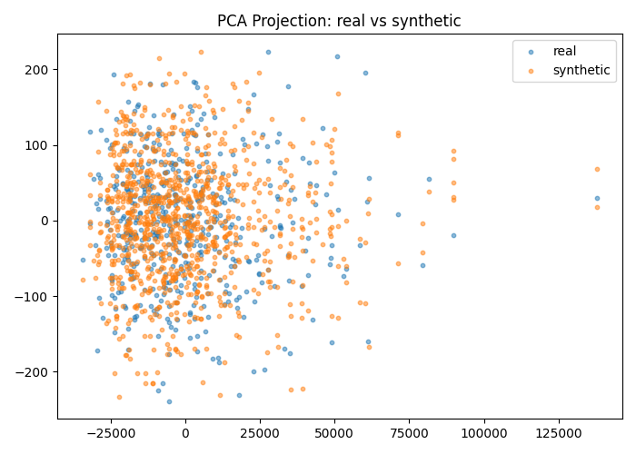
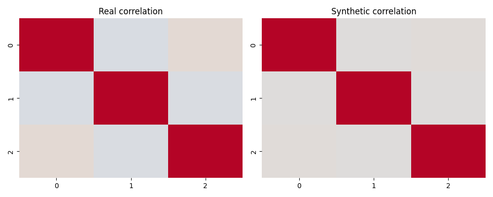
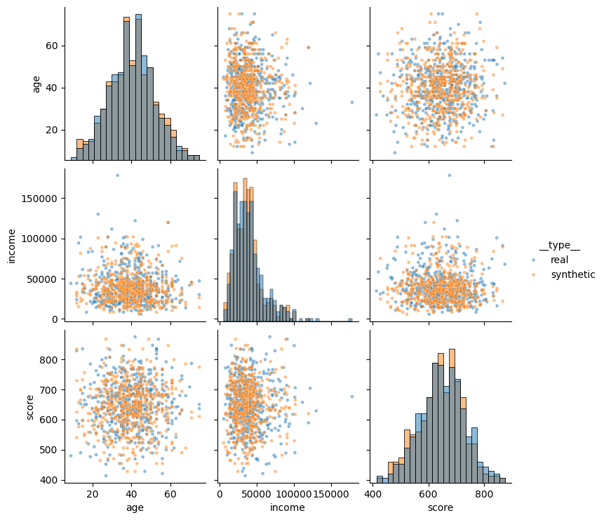

Method: copula · Rows: 1000 · Seed: 42
{
"rows_real": 500,
"rows_synthetic": 1000,
"method": "copula",
"seed": 42,
"schema": {
"numeric_columns": [
"age",
"income",
"score"
],
"categorical_columns": [
"visits",
"segment"
]
},
"paths": {
"synthetic_data": "data\\synthetic_data_copula_run.csv",
"run_dir": "outputs\\copula_run",
"plots_dir": "outputs\\copula_run\\plots",
"report": "reports\\copula_run_report.html"
},
"pairplot_enabled": true,
"distribution_overlap_mean": 0.9407796034871582,
"distribution_overlap_per_feature": {
"age": 0.9344011623412164,
"income": 0.940608962833374,
"score": 0.9473286852868843
},
"pca_explained_variance": [
0.9999857500756923,
1.3975811388141158e-05
],
"correlation_diff_mean": 0.015196542824902856,
"categorical_similarity_mean": 0.9715,
"categorical_similarity_per_feature": {
"visits": 0.948,
"segment": 0.995
},
"numeric_summary_diff_mean": 0.04490553036681102,
"numeric_summary_diff_per_feature": {
"age": {
"mean_abs_diff_scaled": 0.05257040831981136,
"std_abs_diff_scaled": 0.03976152402894969,
"min_abs_diff_scaled": 0.26024954613767926,
"max_abs_diff_scaled": 0.0
},
"income": {
"mean_abs_diff_scaled": 0.005385849063927972,
"std_abs_diff_scaled": 0.015445681602758506,
"min_abs_diff_scaled": 0.0,
"max_abs_diff_scaled": 0.0
},
"score": {
"mean_abs_diff_scaled": 0.048767177932553384,
"std_abs_diff_scaled": 0.029882926552437402,
"min_abs_diff_scaled": 0.0868032507636147,
"max_abs_diff_scaled": 0.0
}
},
"boundary_violation_rate_mean": 0.0,
"numeric_boundary_violation_rate": {
"age": 0.0,
"income": 0.0,
"score": 0.0
},
"categorical_invalid_rate": {
"visits": 0.0,
"segment": 0.0
},
"privacy_note": "Nearest-neighbor metrics are proxy diagnostics, not a formal privacy guarantee.",
"exact_duplicate_rate": 0.0,
"nearest_neighbor_distance_mean": 0.9751642739809634,
"nearest_neighbor_distance_p05": 0.35610617467200717,
"nearest_neighbor_distance_min": 0.03697184863738544,
"ml_utility_available": false,
"ml_utility_reason": "No target configured at evaluation.ml_utility.target."
}



